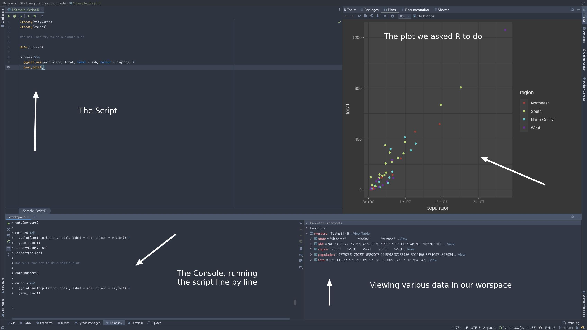
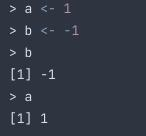
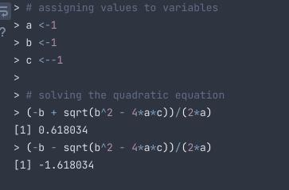
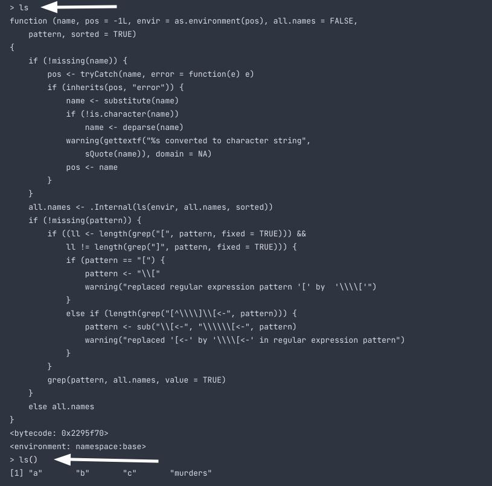

Starting with R
R in DataSpell

When you run a script, the IDE will run the script line by line on the console. If it has some graphics, the IDE will display them. Along with it, you get a pane, where you can browse the workspace's variables and stuff.
Assigning something to a variable
We can also use = to assign a value to a variable, but its recommended not to use it.

Example of solving the quadratic formula in R

Functions
Earlier we used sqrt() which is a function. Functions are either built in, brought in from libraries, or defined by the user.
If you dont use () it instead prints the code for the function, rather than using the function.

Most functions require atleat 1 arguments. You can see the same in here Sample_Script
Data types in R
Function class() helps us to find the data type of some object.
Using a data set
Note - We will be using dslabs to get our data set.
> library(dslabs)
> data(murders)
# Now we will check class of this data set
> class("murders")
[1] "data.frame"
str() function
We use str() to find the structure of a dateframe.
> str(murders)
'data.frame': 51 obs. of 5 variables:
$ state : chr "Alabama" "Alaska" "Arizona" "Arkansas" ...
$ abb : chr "AL" "AK" "AZ" "AR" ...
$ region : Factor w/ 4 levels "Northeast","South",..: 2 4 4 2 4 4 1 2 2 2 ...
$ population: num 4779736 710231 6392017 2915918 37253956 ...
$ total : num 135 19 232 93 1257 ...
#The first line says that this is a dataframe with 51 observations and 5 features.
# The following lines preview few elements of that feature along with its data type
```
If you notice, the region has the data type `Factor`. This is used to store categorical data. Like 1 maps to 'A', 2 maps to 'B' and so on. This is mostly because of memory management. It dosent matter for small data sets like this. But when it comes to larger data sets, it counts
### Accessing the data inside a dataframe
To access a column, we use `$` followed by the column name.
For example
```R
> data(murders)
> str(murders)
'data.frame': 51 obs. of 5 variables:
$ state : chr "Alabama" "Alaska" "Arizona" "Arkansas" ...
$ abb : chr "AL" "AK" "AZ" "AR" ...
$ region : Factor w/ 4 levels "Northeast","South",..: 2 4 4 2 4 4 1 2 2 2 ...
$ population: num 4779736 710231 6392017 2915918 37253956 ...
$ total : num 135 19 232 93 1257 ...
> murders$population
[1] 4779736 710231 6392017 2915918 37253956 5029196 3574097 897934 601723 19687653 9920000 1360301 1567582 12830632 6483802 3046355
[17] 2853118 4339367 4533372 1328361 5773552 6547629 9883640 5303925 2967297 5988927 989415 1826341 2700551 1316470 8791894 2059179
[33] 19378102 9535483 672591 11536504 3751351 3831074 12702379 1052567 4625364 814180 6346105 25145561 2763885 625741 8001024 6724540
[49] 1852994 5686986 563626
Using names function to get features in a data set (It returns the names of the columns)
Creating a Data Frame
You can create a data frame using the data.frame function. Here is a quick example:
temp <- c(35, 88, 42, 84, 81, 30)
city <- c("Beijing", "Lagos", "Paris", "Rio de Janeiro", "San Juan", "Toronto")
city_temps <- data.frame(name = city, temperature = temp)
Bunch of code for you to try out
# loading the dslabs package and the murders dataset
library(dslabs)
data(murders)
# determining that the murders dataset is of the "data frame" class
class(murders)
# finding out more about the structure of the object
str(murders)
# showing the first 6 lines of the dataset
head(murders)
# using the accessor operator to obtain the population column
murders$population
# displaying the variable names in the murders dataset
names(murders)
# determining how many entries are in a vector
pop <- murders$population
length(pop)
# vectors can be of class numeric and character
class(pop)
class(murders$state)
# logical vectors are either TRUE or FALSE
z <- 3 == 2
z
class(z)
# factors are another type of class
class(murders$region)
# obtaining the levels of a factor
levels(murders$region)